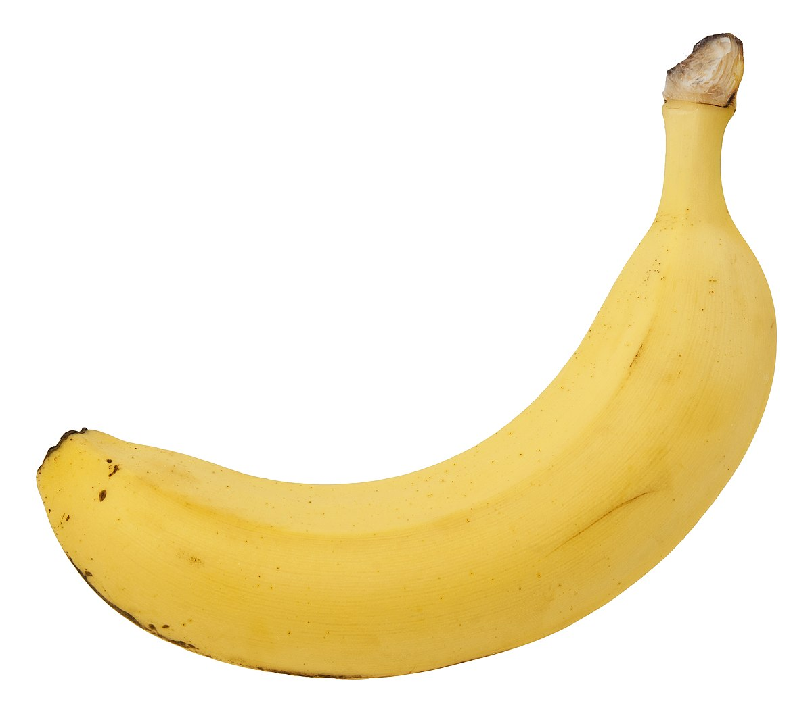
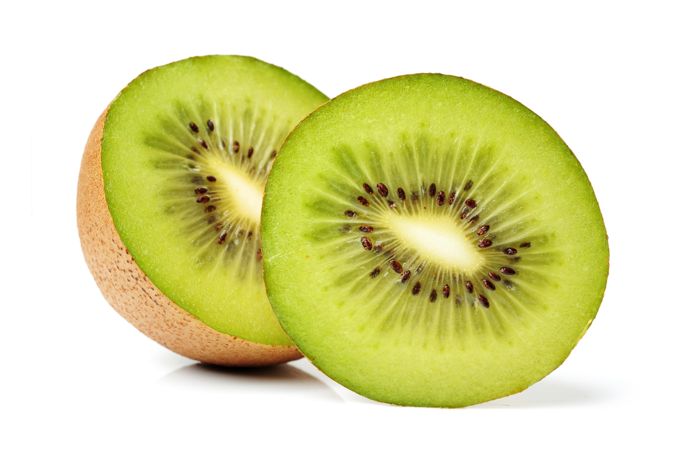
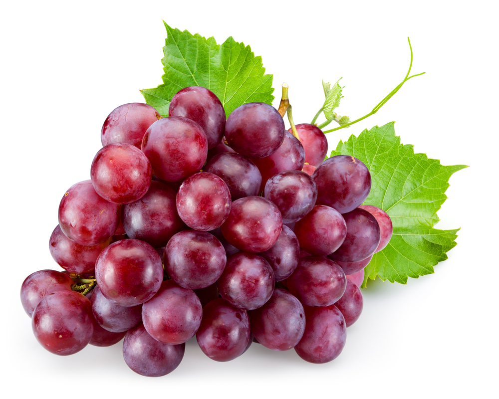

THE FRUIT MARKET
Table of Contents
Apple
Fruits
Fruits are a plant's organs that protect the seeds. After the plant's flower dies, the fruit forms. Many fruits are edible.
Apple
Apples are a sweet and crunchy fruit grown on trees. They can be red or green. There are many types of apples, like Fuji apples.
Orange
Oranges are an orange colored fruit. They are very juicy and have slices. They are high in vitamin C.
Banana
Bananas are a yellow tropical fruit that grow on trees. They grow in bunches. They have a soft texture and a mellow sweetness. They are high in potassium.

Kiwi
Kiwis are the berries of vines that grow on trees. They have a fuzzy outside and the flesh inside is tangy and sweet.

Blueberry
Blueberries are a blue berry that grow on bushes. They are small and have a soft texture.
Grape
Grapes are berries that grow on bunches on vines. They can be purple, red, or green. They can be very sweet or sour. Some are used to make wine.
